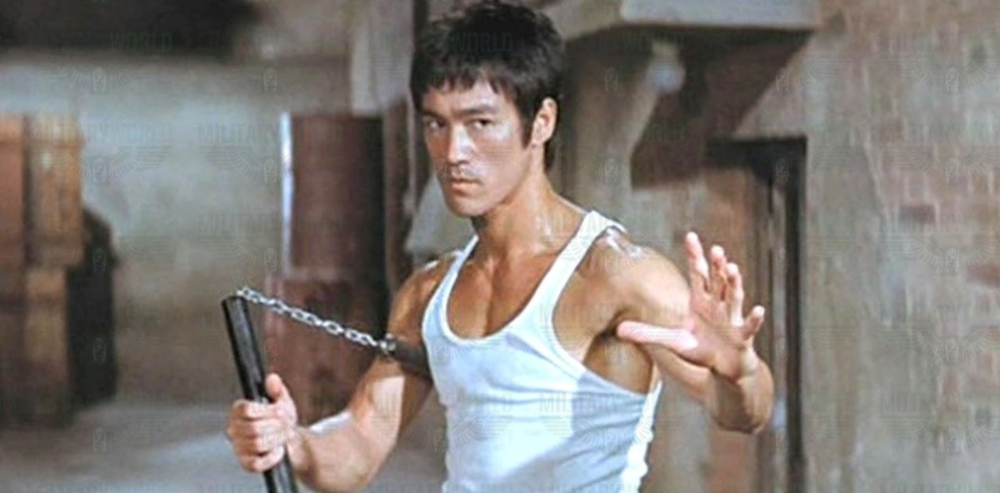
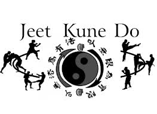
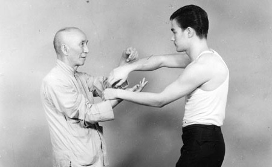
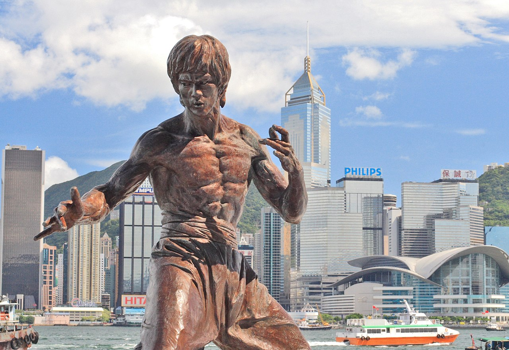

Bruce lee
(1940-1973)

Biografia
Bruce Lee (nacido Lee Jun-fan; San Francisco, California; 27 de noviembre de 1940-Kowloon, Hong Kong; 20 de julio de 1973) fue un artista marcial, maestro de artes marciales, actor, cineasta, filósofo y escritor estadounidense de origen hongkonés. Lee es ampliamente considerado por críticos, expertos, medios y grandes artistas marciales como el artista marcial más influyente de todos los tiempos y un ícono de la cultura pop del siglo XX, que colmó la brecha entre Oriente y Occidente. A menudo se le atribuye haber ayudado a cambiar la forma en que los asiáticos se presentaban en las películas estadounidenses. Fue renovador y el máximo exponente de las artes marciales, dedicando su vida a dicha disciplina, buscando la perfección y la verdad, llegando a crear su propio método de combate y filosofía de vida, el Jun Fan Gung-Fu, que tiempo después y sumado a su concepto filosófico se llamaría el Jeet Kune Do o «el camino del puño interceptor».
Filmografia
- Marlowe (1969)
- The Big Boss (1971)
- Fist of Fury (1972)
- Way of the Dragon (1972)
- Enter the Dragon (1973)
- Game of Death (1978)
Filosofia
El interés filosófico de Bruce Lee inició cuando se encontraba bajo la tutela del sifu Ip Man en wing chun.Ip Man siempre se interesó en la filosofía del wing chun, y esto se lo transmitió a Bruce, algo que tuvo gran influencia en él. Si hay algo que Ip Man le dio a Bruce y que pudo haber cristalizado la dirección de Bruce en la vida, fue interesar a sus estudiantes en las enseñanzas filosóficas de Buda, Confucio, Lao-Tse, y otros grandes pensadores y filósofos chinos. Como resultado, la mente de Bruce se convirtió en la destilación de la sabiduría de tales profesores según declaraciones de Linda Lee Cadwell en su libro The Bruce Lee Story.
Alumno de IP man
A los 12 años, cuando fue expulsado de la escuela por mal comportamiento, Bruce conocío a un chico de su edad, o poco mayor, William Cheung, que siempre andaba metido en peleas y nunca perdía. Un día, Bruce le preguntó la razón por la cual siempre ganaba y este le comentó que era debido a su entrenamiento en artes marciales. En aquella ocasión, William le propuso aprender el estilo chino del wing chun y Bruce aceptó. El comportamiento de Bruce cuando ingresó por primera vez a la academia de Ip Man no fue muy respetuoso, sobre todo tratándose de un muchacho oriental, por lo que Ip Man decidió que Bruce no estaba capacitado para aprender el arte del Wing chun, y así se lo comunicaron por medio de William Cheung. Bruce decidió volver al día siguiente con humildad y respeto y entonces el maestro Ip Man le dio una oportunidad. Bruce estuvo entre tres y cuatro años aprendiendo Wing chun bajo la tutela de Ip Man, aunque la mayor parte de su entrenamiento fue recibido de parte de uno de sus mejores alumnos, Wong Shun-leung.(2001)
Ultimos meses y fallecimiento
Bruce se dirigió a la casa de Betty Ting Pei con el fin de tratar el guion de la película Game of Death. Estando en el apartamento de su amiga, alrededor de las dos de la tarde de ese día, Lee sintió un profundo y agobiante dolor de cabeza. Betty, según su versión que es considerada oficial, le proporcionó un analgésico con receta médica llamado Equagesic (combinación de aspirina y el tranquilizante meprobamato), que le sumió en una profunda inconsciencia de la cual ya no volvería, entrando en estado de coma. A las nueve de la noche, Raymond Chow llamó por teléfono a casa de Betty para saber por qué Bruce no había asistido a la cena como habían acordado. Betty le respondió que no podía molestar a Bruce porque estaba durmiendo. Cuando se dirigió al dormitorio para intentar despertarlo, no respondía, había entrado en un estado de coma.A los diez minutos, llegó un médico de urgencias a la casa de Betty e intentó reanimar a Bruce, pero viendo que no respondía llamaron a una ambulancia que llegó alrededor de las diez de la noche y que lo llevó al Queen Elizabeth Hospital. Raymond llamó por teléfono a la esposa de Bruce, Linda, para avisarle lo que estaba sucediendo.Cuando Bruce llegó al hospital, los doctores lo ingresaron en cuidados intensivos y comenzaron a darle masajes cardíacos para su reanimación, seguido de descargas eléctricas, pero no sirvieron de nada, ya que Bruce Lee había ingresado sin vida al hospital.
Legado
Su legado se puede encontrar en películas, entrevistas, libros y más objetos que sirven para aprender un poco de su forma de entrenamiento, además de su filosofía. El hecho de haber creado un método de combate como el Jun Fan Gung-Fu y luego aplicar su filosofía de vida en donde desecha lo innecesario de un estilo de lucha para hacerlo evolucionar y dar origen al Jeet Kune Do, hace que sea considerado como el pionero de los combates de contacto y sin reglas como lo son las artes marciales mixtas
